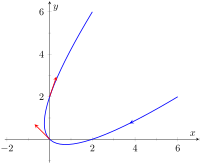
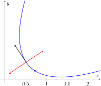
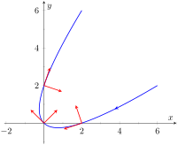

Given a smooth vector-valued function \(\vrt\text{,}\) we defined in Definition 12.2.14 that any vector parallel to \(\vrp(t_0)\) is tangent to the graph of \(\vrt\) at \(t=t_0\text{.}\) It is often useful to consider just the direction of \(\vrp(t)\) and not its magnitude. Therefore we are interested in the unit vector in the direction of \(\vrp(t)\text{.}\) This leads to a definition.
Definition12.4.1.Unit Tangent Vector.
Let \(\vrt\) be a smooth function on an open interval \(I\text{.}\) The unit tangent vector \(\unittangent(t)\) is
These are plotted in Figure 12.4.3 with their initial points at \(\vec r(0)\) and \(\vec r(1)\text{,}\) respectively. (They look rather “short” since they are only length 1.)
Figure12.4.3.Plotting unit tangent vectors in Example 12.4.2
The unit tangent vector \(\unittangent(t)\) always has a magnitude of 1, though it is sometimes easy to doubt that is true. We can help solidify this thought in our minds by computing \(\norm{\unittangent(1)}\text{:}\)
We have rounded in our computation of \(\unittangent(1)\text{,}\) so we don't get 1 exactly. We leave it to the reader to use the exact representation of \(\unittangent(1)\) to verify it has length 1.
In many ways, the previous example was “too nice.” It turned out that \(\vrp(t)\) was always of length 5. In the next example the length of \(\vrp(t)\) is variable, leaving us with a formula that is not as clean.
Example12.4.4.Computing the unit tangent vector.
Let \(\vrt=\la t^2-t,t^2+t\ra\text{.}\) Find \(\unittangent(t)\) and compute \(\unittangent(0)\) and \(\unittangent(1)\text{.}\)
When \(t=0\text{,}\) we have \(\unittangent(0) = \la -1/\sqrt{2},1/\sqrt{2}\ra\text{;}\) when \(t=1\text{,}\) we have \(\unittangent(1) = \la 1/\sqrt{10}, 3/\sqrt{10}\ra\text{.}\) We leave it to the reader to verify each of these is a unit vector. They are plotted in Figure 12.4.5

Figure12.4.5.Plotting unit tangent vectors in Example 12.4.4
Subsection12.4.2Unit Normal Vector
Just as knowing the direction tangent to a path is important, knowing a direction orthogonal to a path is important. When dealing with real-valued functions, we defined the normal line at a point to the be the line through the point that was perpendicular to the tangent line at that point. We can do a similar thing with vector-valued functions. Given \(\vrt\) in \(\mathbb{R}^2\text{,}\) we have 2 directions perpendicular to the tangent vector, as shown in Figure 12.4.6. It is good to wonder “Is one of these two directions preferable over the other?”

Figure12.4.6.Given a direction in the plane, there are always two directions orthogonal to it
Given \(\vrt\) in \(\mathbb{R}^3\text{,}\) there are infinitely many vectors orthogonal to the tangent vector at a given point. Again, we might wonder “Is one out of this infinite number of choices preferable over the others? Is one of these the ‘right’ choice?”
The answer in both \(\mathbb{R}^2\) and \(\mathbb{R}^3\) is “Yes, there is one vector that is not only preferable, it is the ‘right’ one to choose.” Recall Theorem 12.2.24, which states that if \(\vrt\) has constant length, then \(\vrt\) is orthogonal to \(\vrp(t)\) for all \(t\text{.}\) We know \(\unittangent(t)\text{,}\) the unit tangent vector, has constant length. Therefore \(\unittangent(t)\) is orthogonal to \(\unittangentprime(t)\text{.}\)
We'll see that \(\unittangentprime(t)\) is more than just a convenient choice of vector that is orthogonal to \(\vrp(t)\text{;}\) rather, it is the “right” choice. Since all we care about is the direction, we define this newly found vector to be a unit vector.
Definition12.4.7.Unit Normal Vector.
Let \(\vrt\) be a vector-valued function where the unit tangent vector, \(\unittangent(t)\text{,}\) is smooth on an open interval \(I\text{.}\) The unit normal vector \(\unitnormal(t)\) is
Let \(\vrt = \la 3\cos(t) , 3\sin(t) , 4t\ra\) as in Example 12.4.2. Sketch both \(\unittangent(\pi/2)\) and \(\unitnormal(\pi/2)\) with initial points at \(\vec r(\pi/2)\text{.}\)
Figure12.4.9.Plotting unit tangent and normal vectors in Example 12.4.9
The previous example was once again “too nice.” In general, the expression for \(\unittangent(t)\) contains fractions of square roots, hence the expression of \(\unittangentprime(t)\) is very messy. We demonstrate this in the next example.
Example12.4.10.Computing the unit normal vector.
Let \(\vrt=\la t^2-t,t^2+t\ra\) as in Example 12.4.4. Find \(\unitnormal(t)\) and sketch \(\vrt\) with the unit tangent and normal vectors at \(t=-1,0\) and 1.
Using this formula for \(\unitnormal(t)\text{,}\) we compute the unit tangent and normal vectors for \(t=-1,0\) and 1 and sketch them in Figure 12.4.11.

Figure12.4.11.Plotting unit tangent and normal vectors in Example 12.4.10
The final result for \(\unitnormal(t)\) in Example 12.4.10 is suspiciously similar to \(\unittangent(t)\text{.}\) There is a clear reason for this. If \(\vec u = \la u_1,u_2\ra\) is a unit vector in \(\mathbb{R}^2\text{,}\) then the only unit vectors orthogonal to \(\vec u\) are \(\la -u_2,u_1\ra\) and \(\la u_2,-u_1\ra\text{.}\) Given \(\unittangent(t)\text{,}\) we can quickly determine \(\unitnormal(t)\) if we know which term to multiply by \((-1)\text{.}\)
Consider again Figure 12.4.11, where we have plotted some unit tangent and normal vectors. Note how \(\unitnormal(t)\) always points “inside” the curve, or to the concave side of the curve. This is not a coincidence; this is true in general. Knowing the direction that \(\vec r(t)\) “turns” allows us to quickly find \(\unitnormal(t)\text{.}\)
Theorem12.4.12.Unit Normal Vectors in \(\mathbb{R}^2\).
Let \(\vec r(t)\) be a vector-valued function in \(\mathbb{R}^2\) where \(\unittangentprime(t)\) is smooth on an open interval \(I\text{.}\) Let \(t_0\) be in \(I\) and \(\unittangent(t_0) = \la t_1,t_2\ra\) Then \(\unitnormal(t_0)\) is either
whichever is the vector that points to the concave side of the graph of \(\vec r\text{.}\)
Subsection12.4.3Application to Acceleration
Let \(\vrt\) be a position function. It is a fact (stated later in Theorem 12.4.13) that acceleration, \(\vat\text{,}\) lies in the plane defined by \(\unittangent\) and \(\unitnormal\text{.}\) That is, there are scalar functions \(a_\text{T}(t)\) and \(a_\text{N}(t)\) such that
We generally drop the “of \(t\)” part of the notation and just write \(a_\text{T}\) and \(a_\text{N}\text{.}\)
The scalar \(a_\text{T}\) measures “how much” acceleration is in the direction of travel, that is, it measures the component of acceleration that affects the speed. The scalar \(a_\text{N}\) measures “how much” acceleration is perpendicular to the direction of travel, that is, it measures the component of acceleration that affects the direction of travel.
We can find \(a_\text{T}\) using the orthogonal projection of \(\vec a(t)\) onto \(\unittangent(t)\) (review Definition 11.3.14 in Section 11.3 if needed). Recalling that since \(\unittangent(t)\) is a unit vector, \(\unittangent(t)\cdot\unittangent(t)=1\text{,}\) so we have
Thus the amount of \(\vat\) in the direction of \(\unittangent(t)\) is \(a_\text{T}=\vat\cdot\unittangent(t)\text{.}\) The same logic gives \(a_\text{N} = \vat\cdot\unitnormal(t)\text{.}\)
While this is a fine way of computing \(a_\text{T}\text{,}\) there are simpler ways of finding \(a_\text{N}\) (as finding \(\unitnormal\) itself can be complicated). The following theorem gives alternate formulas for \(a_\text{T}\) and \(a_\text{N}\text{.}\)
Theorem12.4.13.Acceleration in the Plane Defined by \(\unittangent\) and \(\unitnormal\).
Let \(\vrt\) be a position function with acceleration \(\vat\) and unit tangent and normal vectors \(\unittangent(t)\) and \(\unitnormal(t)\text{.}\) Then \(\vat\) lies in the plane defined by \(\unittangent(t)\) and \(\unitnormal(t)\text{;}\) that is, there exists scalars \(a_\text{T}\) and \(a_\text{N}\) such that
Note the second formula for \(a_\text{T}\text{:}\)\(\ds \frac{d}{dt}\Big(\norm{\vvt}\Big)\text{.}\) This measures the rate of change of speed, which again is the amount of acceleration in the direction of travel.
Example12.4.14.Computing \(a_T\) and \(a_N\).
Let \(\vrt = \la 3\cos(t) , 3\sin(t) , 4t\ra\) as in Examples 12.4.2 and Example 12.4.8. Find \(a_\text{T}\) and \(a_\text{N}\text{.}\)
Thus \(\vat = 0\unittangent(t) + 3\unitnormal(t) = 3\unitnormal(t)\text{,}\) which is clearly the case.
What is the practical interpretation of these numbers? \(a_\text{T} =0\) means the object is moving at a constant speed, and hence all acceleration comes in the form of direction change.
Example12.4.15.Computing \(a_T\) and \(a_N\).
Let \(\vrt=\la t^2-t,t^2+t\ra\) as in Examples 12.4.4 and Example 12.4.10. Find \(a_\text{T}\) and \(a_\text{N}\text{.}\)
When \(t=2\text{,}\)\(\ds a_\text{T} = \frac{16}{\sqrt{34}}\approx 2.74\) and \(\ds a_\text{N} = \frac{4}{\sqrt{34}} \approx 0.69\text{.}\) We interpret this to mean that at \(t=2\text{,}\) the particle is accelerating mostly by increasing speed, not by changing direction. As the path near \(t=2\) is relatively straight, this should make intuitive sense. Figure 12.4.16 gives a graph of the path for reference.
Contrast this with \(t=0\text{,}\) where \(a_\text{T} = 0\) and \(a_\text{N} = 4/\sqrt{2}\approx 2.82\text{.}\) Here the particle's speed is not changing and all acceleration is in the form of direction change.
Example12.4.17.Analyzing projectile motion.
A ball is thrown from a height of 240 ft with an initial speed of 64 ft⁄s and an angle of elevation of \(30^\circ\text{.}\) Find the position function \(\vrt\) of the ball and analyze \(a_\text{T}\) and \(a_\text{N}\text{.}\)
Figure12.4.18.Plotting the position of a thrown ball, with 1s increments shown
From this we find \(\vvt = \la 64\cos(30^\circ) , -32t+64\sin(30^\circ) \ra\) and \(\vat = \la 0,-32\ra\text{.}\) Computing \(\unittangent(t)\) is not difficult, and with some simplification we find
Figure 12.4.19 gives a table of values of \(a_\text{T}\) and \(a_\text{N}\text{.}\) When \(t=0\text{,}\) we see the ball's speed is decreasing; when \(t=1\) the speed of the ball is unchanged. This corresponds to the fact that at \(t=1\) the ball reaches its highest point.
After \(t=1\) we see that \(a_\text{N}\) is decreasing in value. This is because as the ball falls, its path becomes straighter and most of the acceleration is in the form of speeding up the ball, and not in changing its direction.
Table12.4.19.A table of values of \(a_T\) and \(a_N\) in Example 12.4.17
\(t\)
\(a_\text{T}\)
\(a_\text{N}\)
\(0\)
\(-16\)
\(27.7\)
\(1\)
\(0\)
\(32\)
\(2\)
\(16\)
\(27.7\)
\(3\)
\(24.2\)
\(20.9\)
\(4\)
\(27.7\)
\(16\)
\(5\)
\(29.4\)
\(12.7\)
Our understanding of the unit tangent and normal vectors is aiding our understanding of motion. The work in Example 12.4.17 gave quantitative analysis of what we intuitively knew.
The next section provides two more important steps towards this analysis. We currently describe position only in terms of time. In everyday life, though, we often describe position in terms of distance (“The gas station is about 2 miles ahead, on the left.”). The arc length parameter allows us to reference position in terms of distance traveled.
We also intuitively know that some paths are straighter than others — and some are curvier than others, but we lack a measurement of “curviness.” The arc length parameter provides a way for us to compute curvature, a quantitative measurement of how curvy a curve is.
Exercises12.4.4Exercises
Terms and Concepts
1.
If \(\unittangent(t)\) is a unit tangent vector, what is \(\norm{\unittangent(t)}\text{?}\)
2.
If \(\unitnormal(t)\) is a unit normal vector, what is \(\unitnormal(t)\cdot \vrp(t)\text{?}\)
3.
The acceleration vector \(\vat\) lies in the plane defined by what two vectors?
4.
\(a_\text{T}\) measures how much the acceleration is affecting the of an object.
Problems
Exercise Group.
Given \(\vrt\text{,}\) find \(\unittangent(t)\) and evaluate it at the indicated value of \(t\text{.}\)
Find the equation of the line tangent to the curve at the indicated \(t\)-value using the unit tangent vector. Note: these are the same problems as in Exercises 12.4.4.5 — Exercise 12.4.4.8.
9.
Find the vector equation of the line tangent to \(\vrt = \la 2t^2,t^2-t \ra\) at \(t=1\) using the unit tangent vector.
10.
Find the vector equation of the line tangent to \(\vrt = \la t,\cos(t) \ra\) at \(t=\pi/4\) using the unit tangent vector.
In the following exercises, a position function \(\vrt\) is given along with its unit tangent vector \(\unittangent(t)\) evaluated at \(t=a\text{,}\) for some value of \(a\text{.}\)
Confirm that \(\unittangent(a)\) is as stated.
Using a graph of \(\vrt\) and Theorem 12.4.12, find \(\unitnormal(a)\text{.}\)
In the following exercises, find \(\unitnormal(t)\text{.}\)
21.
\(\vrt = \la 4t,2\sin(t) ,2\cos(t) \ra\)
22.
If \(\vrt = \la 5\cos(t) ,3\sin(t) ,4\sin(t) \ra\text{,}\) find \(\unitnormal(t)\text{.}\)
23.
\(\vrt = \la a\cos(t) ,a\sin(t) ,b t \ra\text{;}\)\(a \gt 0\)
24.
If \(\vrt = \la \cos(at),\sin(at),t \ra\text{,}\) find \(\unitnormal(t)\text{.}\)
Exercise Group.
In the following exercises, find \(a_\text{T}\) and \(a_\text{N}\) given \(\vrt\text{.}\) Be sure you can sketch \(\vrt\) on the indicated interval, and comment on the relative sizes of \(a_\text{T}\) and \(a_\text{N}\) at the indicated \(t\) values.
25.
\(\vrt = \la t,t^2 \ra\) on \([-1,1]\text{;}\) consider \(t=0\) and \(t=1\text{.}\)
26.
\(\vrt = \la t,1/t \ra\) on \((0,4]\text{;}\) consider \(t=1\) and \(t=2\text{.}\)
27.
\(\vrt = \la 2\cos(t) ,2\sin(t) \ra\) on \([0,2\pi]\text{;}\) consider \(t=0\) and \(t=\pi/2\text{.}\)
28.
\(\vrt = \la \cos(t^2),\sin(t^2) \ra\) on \((0,2\pi]\text{;}\) consider \(t=\pi/2\) and \(t=\pi\text{.}\)
29.
\(\vrt = \la a\cos(t) ,a\sin(t) , bt \ra\) on \([0,2\pi]\text{,}\) where \(a,b \gt 0\text{;}\) consider \(t=0\) and \(t=\pi/2\text{.}\)
30.
\(\vrt = \la 5\cos(t) ,4\sin(t) , 3\sin(t) \ra\) on \([0,2\pi]\text{;}\) consider \(t=0\) and \(t=\pi/2\text{.}\)